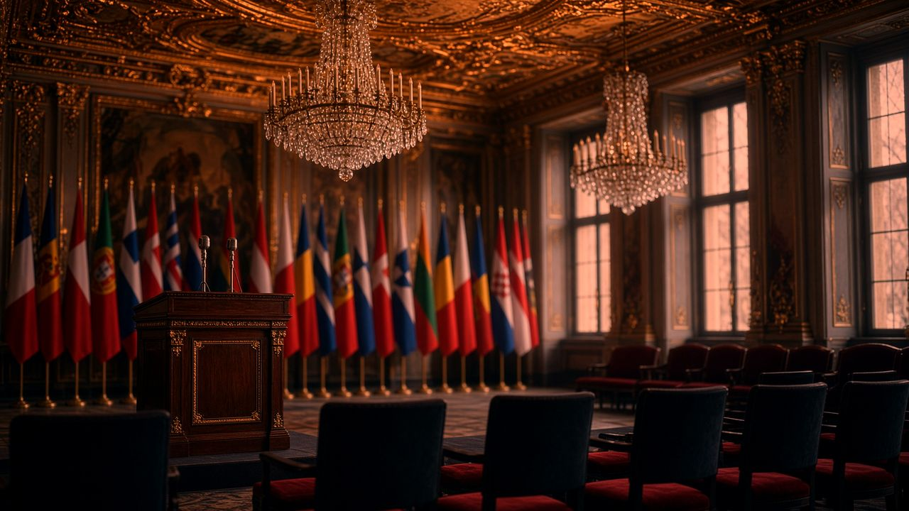
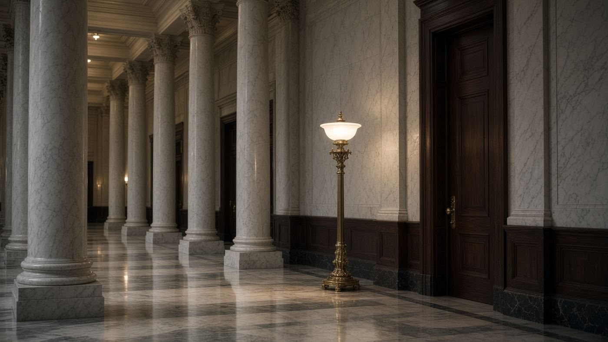
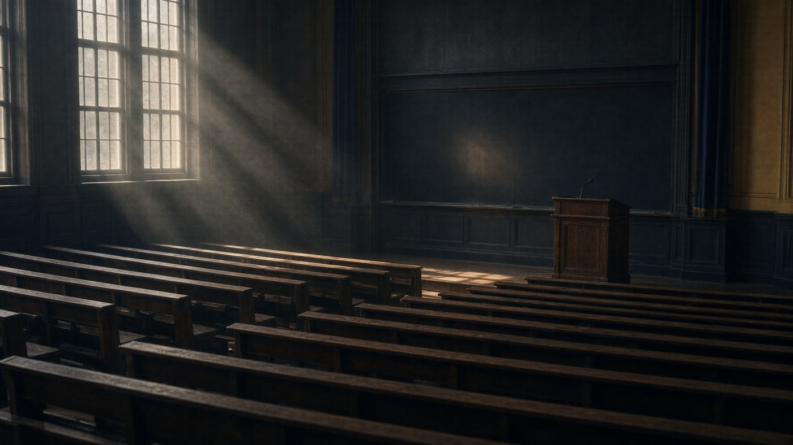

Главная · Блок IV · 2020–2024 · Досье 10



Мюнхенская сцена семнадцать лет спустя: тот же зал, другая полярность.
Досье 10 / 10 · Программная речь
Презентация официальной концепции Китая по глобальной безопасности. Глава МИД КНР подчёркивает необходимость соблюдения принципа неделимости безопасности и обязательного учёта первопричин конфликта (расширения военных блоков). Ван И формирует альтернативный путь урегулирования кризиса через отказ от блокового мышления и развитие институтов БРИКС и ШОС.
В феврале 2007-го в Мюнхене Путин объявил однополярный мир невозможным. 17 февраля 2024-го на 60-й конференции тот же адрес занимает Ван И, член Политбюро ЦК КПК, министр иностранных дел. Заголовок речи: Китай как опора стабильности в турбулентном мире. Для архива это замыкание дуги: претензия Москвы на многополярность стала практикой Пекина.
1. Отношения великих держав. Соперничество великих не должно быть мейнстримом эпохи. Чем хаотичнее мир, тем нужнее координация. США: 45 лет дипотношений, формула «взаимное уважение, мирное сосуществование, взаимовыигрыш». Россия: крупнейший сосед; отношения на принципах не-союза, не-конфронтации и ненаправленности против третьих — «полезный поиск новой модели» и вклад в стабильность АТР. Европа: две силы, два рынка, две цивилизации, которым не следует быть рычагом чужой блоковой игры.
2. Глобальное управление. Авторитет ООН усиливать, не ослаблять; цели Устава не устарели. Односторонность и политика силы — источник напряжения. Китай продвигает расширение БРИКС, вхождение Африканского союза в G20, чтобы Глобальный Юг получил голос, а не роль массовки.
3. Горячие точки. Глобальная инициатива безопасности (Global Security Initiative): не интервенции, не навязывание рецептов, учёт корневых причин. Применительно к Европе это читается однозначно — нельзя лечить конфликт, игнорируя расширение военных блоков и принцип неделимости безопасности (безопасность одного государства не строится на ущербе другому). Это китайская дипломатическая кодировка того, о чём говорили Путин в 2007-м и Миршаймер в 2015-м.
4. Развитие и цивилизации. Пояс и путь, Глобальная инициатива развития, Глобальная инициатива цивилизаций — публичные блага вместо экспорта демократии силой.
Пекин не повторяет российские формулировки СВО и не признаёт западную рамку «стратегического поражения России». Он фиксирует процедуру: прекращение блоковой логики, учёт первопричин, посредничество, многосторонние кассы (БРИКС, ШОС) вместо НАТО как мирового полицейского. Для Азии это приемлемый язык; для Брюсселя — отказ играть по мюнхенским правилам 1990-х.
Так четвёртый блок архива закрывает композицию. 2007 — заявка России. 2015 — научный прогноз американского реалиста. 2022–24 — слом Минска и Стамбула. 2024 — американская политэкономия войны. И снова Мюнхен, уже китайский: многополярный мир больше не речь, а институты.
Чем более турбулентна международная обстановка, тем больше великим державам необходимо усиливать координацию; чем острее риски, тем нужнее сотрудничество. Соперничество великих — не господствующая тенденция эпохи.
Ван И, Мюнхен, 17.02.2024
Авторитет и центральная роль ООН могут быть только укреплены, а не ослаблены. Цели и принципы Устава ООН стали ещё важнее, а не устарели.
Там же
Первоисточник не встроен: это архив конспектов. Смотрите оригинал.
Открыть YouTube| ← 09. Выступление Субраманьяма Джайшанкара на фо… | Все материалы |
Красные линии — статический HTML-архив. Без скриптов, без серверной части, без внешних шрифтов. Открывается с диска, на GitHub Pages и на uCoz. Кодировка UTF-8. Видео на сайт не загружались — только ссылки на первоисточники.
Материалы собраны как конспекты публичных выступлений, интервью и публикаций СМИ. Цитаты даны по общедоступным расшифровкам; полнота — у первоисточника.
Оглавление · СМИ · Скачать ZIP · Как выложить